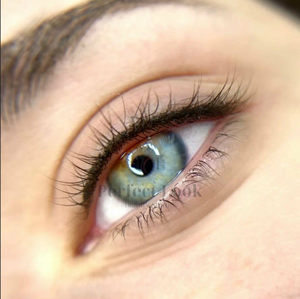
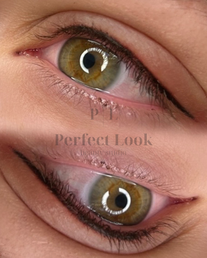
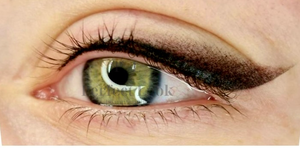
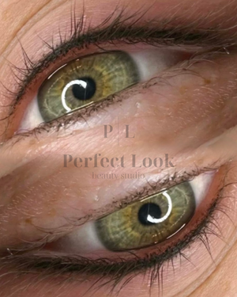
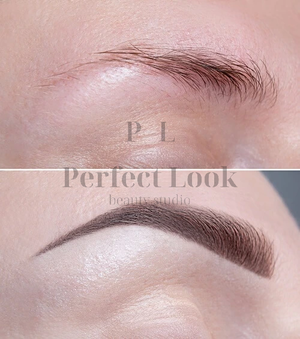
 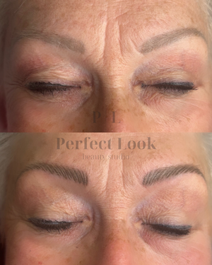
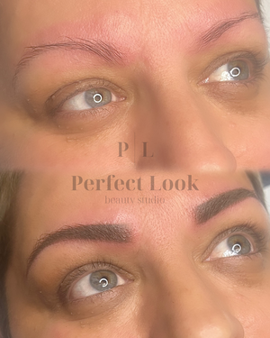
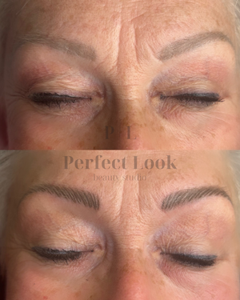
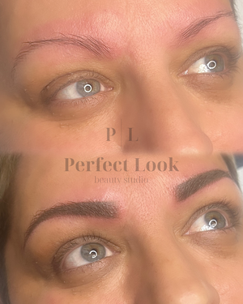
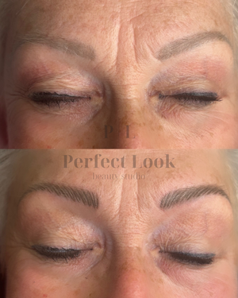
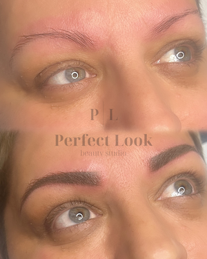
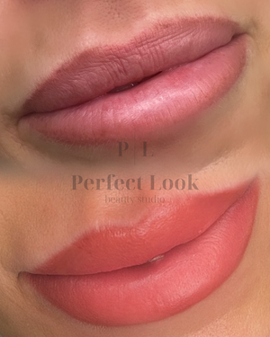
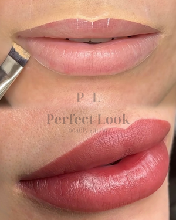
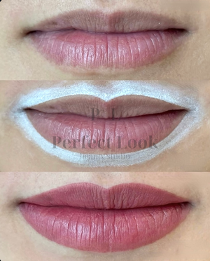
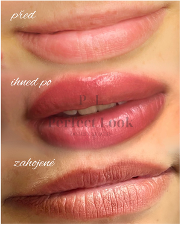
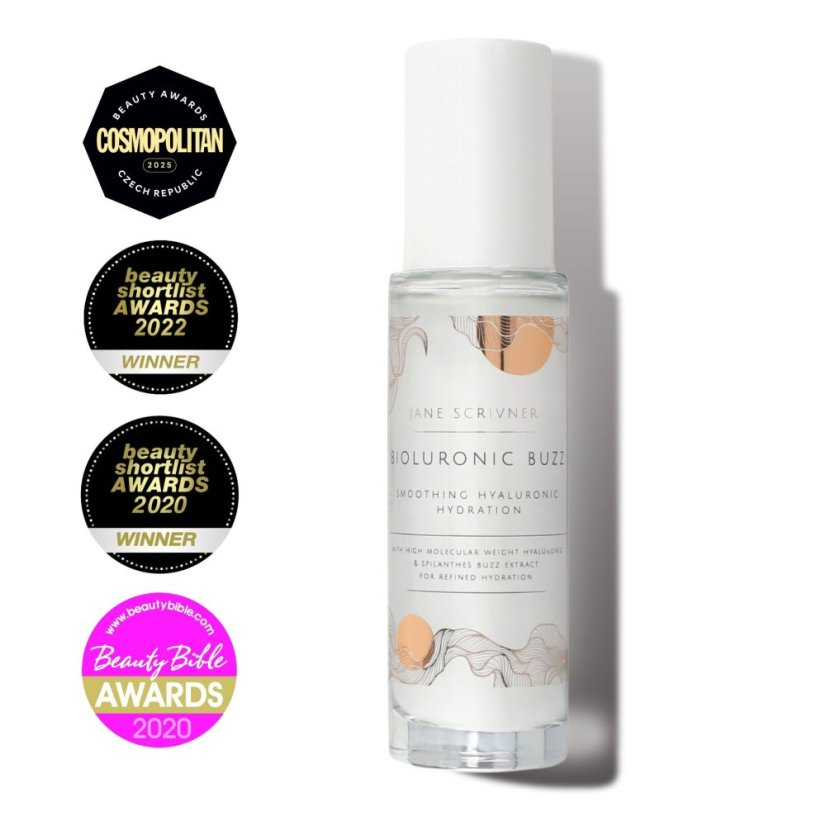
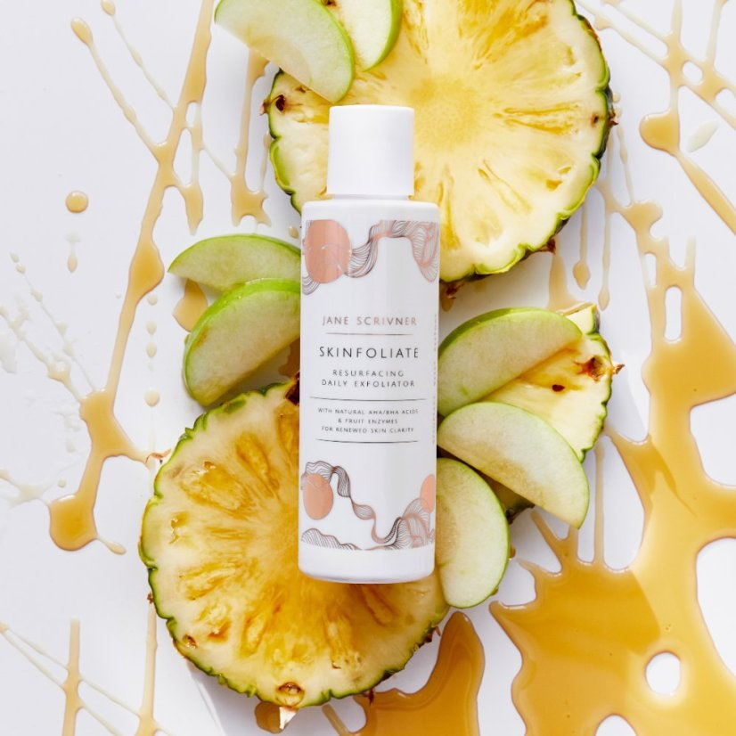
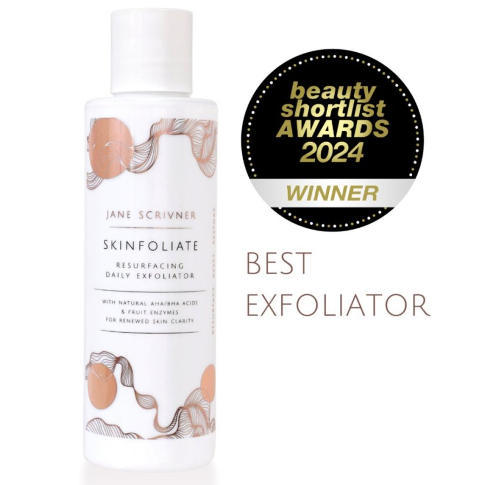
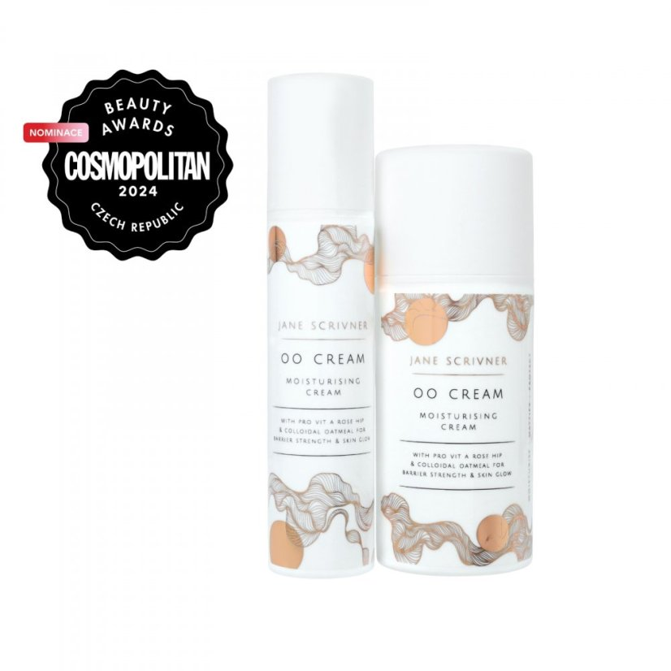
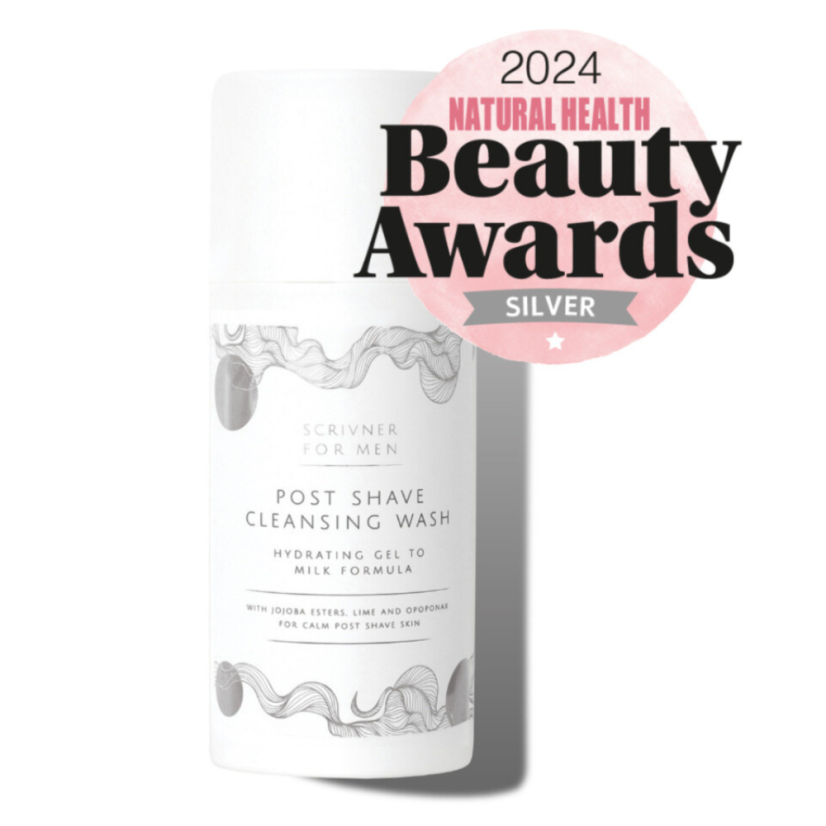
Perfect Look beauty studio nabízí svým klientům profesionální péči a individuální přístup. Před ošetřením probíhá konzultace zdarma, kde zjistíme vaše požadavky a potřeby na míru pro vaši maximální spokojenost.
Ve studiu je možné zakoupení dárkových poukazů a přírodní luxusní britské kosmetiky Jane Scrivner
Permanentní make-up & kosmetická péče
Jmenuji se Petra Ludková a mým posláním je pomáhat klientkám a klientům cítit se krásně a sebevědomě.
Původně jsem vystudovala ekonomickou školu a dlouhá léta působila v tomto oboru. Postupně jsem ale cítila, že potřebuji změnu a nové naplnění. Protože mi byl svět krásy vždy blízký, rozhodla jsem se vydat cestou permanentního make-upu a kosmetiky.
Dnes vnímám tuto práci jako možnost propojit estetiku, preciznost a osobní přístup. Baví mě sledovat, jak i drobná úprava dokáže rozzářit tvář a dodat klientkám i klientům sebevědomí.
Věřím, že krása nemá věk – začíná uvnitř nás a rozkvétá pokaždé, když si dopřejeme chvíli jen pro sebe.
Značka Jane Scrivner „doopravdy“ vznikla v roce 2011, už dlouho předtím si ale Jane sama míchala přípravky podle vlastní receptury a poskytovala luxusní kosmetická ošetření obličeje i celého těla, která přinášela skvělé výsledky. Přírodní a účinné bio oleje plné látek, které vyživují pleť, aby nevypadala bledě a nezdravě, ale byla vyživená a plná života.
Jane Scrivner je exkluzivní britská značka, která si získala oblibu po celém světě a byla oceněna řadou prestižních cen. Její filozofie stojí na pečlivém výběru surovin a výrobě s důrazem na nejvyšší kvalitu.
Produkty Jane Scrivner posilují ochrannou bariéru pleti, udržují správné pH a dodávají potřebnou hydrataci i výživu. Nabízí kompletní péči – od odlíčení a čištění pleti až po hydratační a vyživující přípravky.
Součástí sortimentu jsou také originální bytové vůně a éterické oleje, které provoní váš domov a vytvoří jedinečnou atmosféru.
| Permanentní make-up | Cena |
|---|---|
| obočí (powder/hairstroke/combo) | 4 800 Kč |
| rty | 4 800 Kč |
| linky horní | 3 500 Kč |
| linky dolní | 1 900 Kč |
| linky (horní+dolní) | 4 800 Kč |
| Korekce do 3 měsíců | 1 500 Kč |
| Odstranění permanentního make-upu | od 1 000 Kč |
| Kosmetika | Cena |
|
Kosmetické ošetření dle typu pleti
Ošetření pleti zaměřené na danou problematiku pleti (odlíčení, hloubkové čištění ultrazvukem, kosmetická masáž obličeje, maska, sérum, krém) |
1 590 Kč
cca 90 minut |
|
Kosmetické ošetření pro muže včetně relaxační masáže obličeje
Relaxační a detoxikační ošetření navržené speciálně pro potřeby mužské pleti, pomáhá posílit obranyschopnost pleti, zklidnit podráždění a dodat jí zdravý, upravený vzhled. |
1 590 Kč
cca 90 minut |
| Úprava a barvení obočí (pouze k celkovému ošetření) | 250 Kč |
| Epilace - obličej, ruce, hrudník (pouze k celkovému ošetření) | 250 Kč |
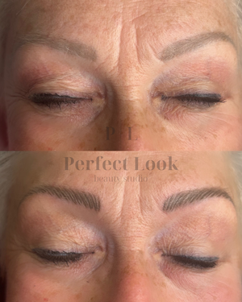
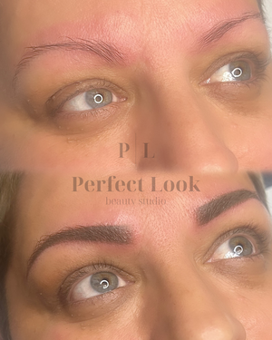